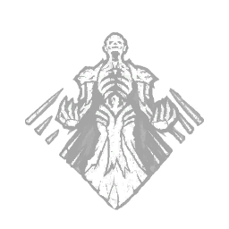
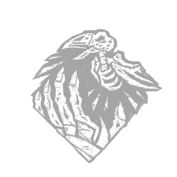
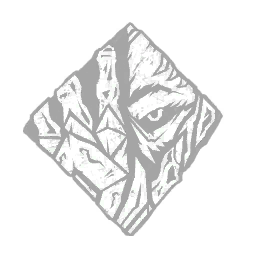

O Litch

O Dracula

O Cara Legal

O Ghoul

O Xenomofo

Ghostface

O Litch
Uma enfermeira assassina com poderes assustadores para quem gosta de se esconder nas jogatinas de Dead by Daylight. Com o uso de suas habilidades, ela consegue encontrar facilmente qualquer sobrevivente que está machucado.
<Arrogancia Sombria
Quando tudo está indo bem, você é uma inevitabilidade inescapável.
Aumenta sua velocidade de salto em troca de maior vulnerabilidade a cegueira e atordoamento:
Aumenta permanentemente a duração de Killer Blinds por qualquer meio e a duração de Pallet Stuns em +25%
.
Aumenta permanentemente sua velocidade de salto em 15 / 20 / 25 %.
"Corra o quanto quiser. Não serei impedido." — Vecna
Arrogancia Sombria
Uma enfermeira assassina com poderes assustadores para quem gosta de se esconder nas jogatinas de Dead by Daylight. Com o uso de suas habilidades, ela consegue encontrar facilmente qualquer sobrevivente que está machucado.
Arrogancia Sombria
Uma enfermeira assassina com poderes assustadores para quem gosta de se esconder nas jogatinas de Dead by Daylight. Com o uso de suas habilidades, ela consegue encontrar facilmente qualquer sobrevivente que está machucado.
O Dracula
Uma caçadora implacável capaz de atingir os sobreviventes à distância com suas machadinhas. Anna pode fazer uso de suas perks (habilidades) para ter conhecimento do mapa e da localização de seus alvos. Sua máscara de lebre consegue deixá-la ainda mais assustadora.
O Cara Legal
Vindo diretamente da série de filmes O Massacre da Serra Elétrica, este violento killer é capaz de causar um massivo dano nos sobreviventes quando liga a sua arma. Quando bem usadas, suas habilidades podem impedir os sobreviventes de saber o posicionamento de todos no mapa.
O Ghoul
Vindo diretamente da série de filmes O Massacre da Serra Elétrica, este violento killer é capaz de causar um massivo dano nos sobreviventes quando liga a sua arma. Quando bem usadas, suas habilidades podem impedir os sobreviventes de saber o posicionamento de todos no mapa.
O Xenomorfo
Vindo diretamente da série de filmes O Massacre da Serra Elétrica, este violento killer é capaz de causar um massivo dano nos sobreviventes quando liga a sua arma. Quando bem usadas, suas habilidades podem impedir os sobreviventes de saber o posicionamento de todos no mapa.
Ghostface
Vindo diretamente da série de filmes O Massacre da Serra Elétrica, este violento killer é capaz de causar um massivo dano nos sobreviventes quando liga a sua arma. Quando bem usadas, suas habilidades podem impedir os sobreviventes de saber o posicionamento de todos no mapa.